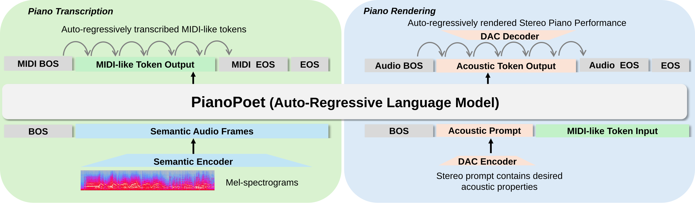
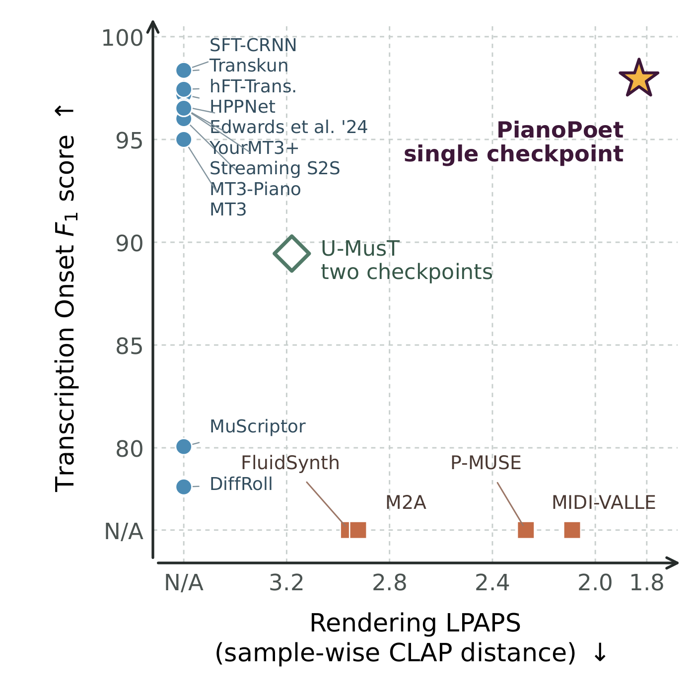

Demo page
PianoPoet Unifying Piano Transcription and Rendering via Auto-regressive Modeling
A single-checkpoint model for neural piano transcription and rendering, built on one shared auto-regressive Transformer backbone.
01 / Overview
One backbone, both directions
PianoPoet frames transcription and rendering as sequence-to-sequence tasks with a shared MIDI tokenizer but decoupled audio representations: semantic audio frames for transcription, and acoustic tokens for rendering.

Joint capability
A single checkpoint at the frontier
The unified model reaches strong results in both acoustic-to-symbolic transcription and symbolic-to-acoustic rendering.
- 1
- shared checkpoint
- 2
- generative directions
- AR
- training objective

Abstract
Across acoustic and symbolic music
Solo-piano transcription and rendering connect the acoustic and symbolic domains of music in opposite directions. Although pianists naturally move between these domains, recent unified models lag behind task-specific methods. To address this challenge, we present PianoPoet, a single-checkpoint auto-regressive framework that unifies both tasks with a shared Transformer backbone.
We formulate both directions as sequence-to-sequence problems and identify the construction of sequences with appropriate representations as a key challenge. PianoPoet shares a common MIDI tokenizer for both directions while decoupling audio representations: continuous semantic audio frames for fine-grained transcription, and a piano-specific discrete audio tokenizer for realistic piano rendering. Both tasks are optimized with cross-entropy loss.
PianoPoet outperforms prior unified models, achieves the best results among the evaluated generative transcription methods, and outperforms specialized rendering methods in most evaluated metrics. It supports full-band stereo rendering and stereo-position control through acoustic prompts. Ablations show that both directions can share a backbone with little interference while remaining comparable to single-task variants.
Piano rendering
Examples are drawn from the MAESTRO test set [1].
03 / Reconstruction
Piano audio codec
We compare the reconstruction performance between PianoPoet DAC and general-purpose & piano-specific neural codecs. Examples are drawn from the MAESTRO test set [1].
04 / Zero-shot transfer
Historical piano restoration
PianoPoet restores noisy historical piano recordings by composing its two learned directions, without restoration-specific training or fine-tuning.
PianoPoet, zero-shot. The noisy source is first transcribed into MIDI. That MIDI is then rendered with the shared clean piano audio prompt, using the same unified checkpoint in both directions. The five-second conditioning prompt is included in the listening comparison below.
Trained, specialized baseline. Both baseline stages are designed specifically for restoration: Moliner's supervised Two-Stage U-Net denoiser is followed by BABE-2, which uses a trained diffusion prior for generative equalization.
05 / Acoustic prompting
Stereo-position control
PianoPoet changes spatial position and room character through acoustic prompting while keeping the transcribed MIDI performance fixed.
Each five-second acoustic prompt is paired below with its aligned 30-second rendering, making the resulting left, center, and right presentations directly comparable.